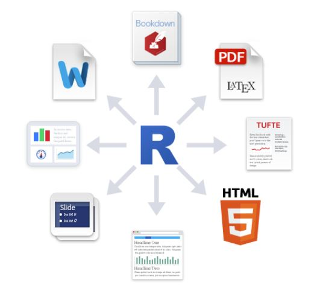
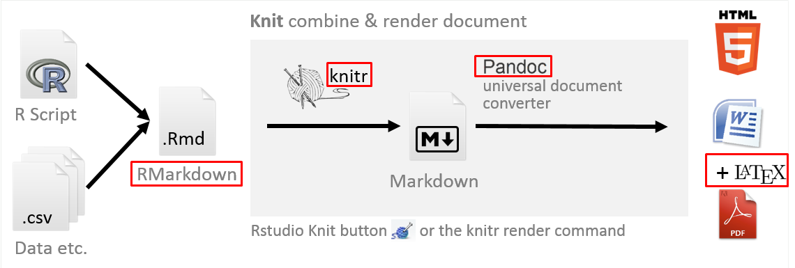
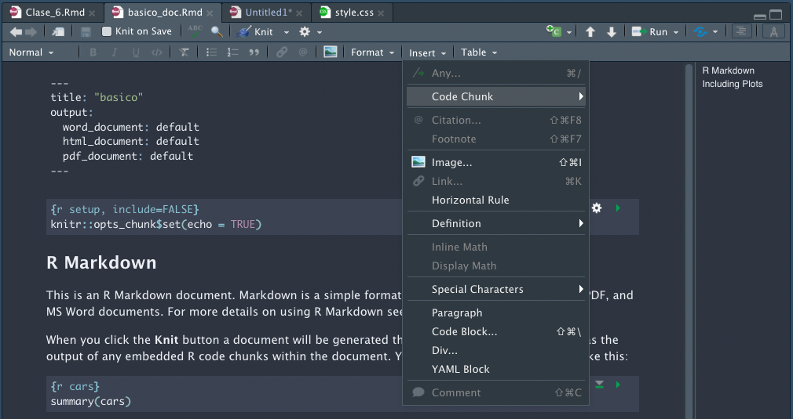
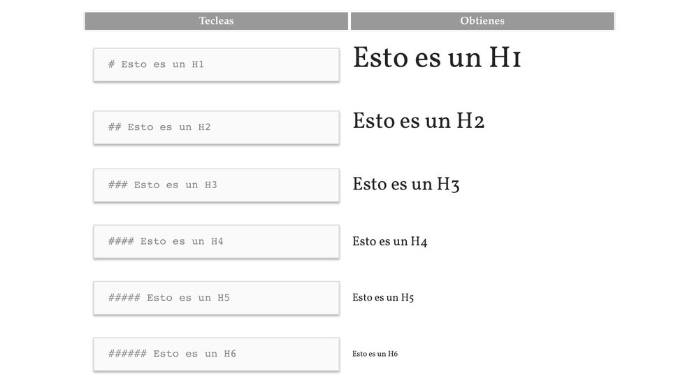
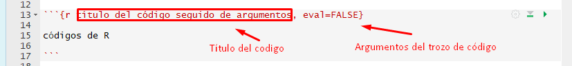

7 Rmarkdown
7.1 Introducción
Rmarkdown es que permite generar informes a partir de R.Este permite incluir texto, comandos de R, imágenes y gráficos a un documento.

7.2 Markdown

- RMarkdown:
- Basado en el lenguaje markdown - funcionalidad que busca convertir rápida y fácilmente texto plano tipo bloc de notas a formato HTML - RMarkdown es un tipo de documento de RStudio que permite integrar texto con código de R.
- Knitr:
- Este paquete integra en un sólo archivo markdown el texto ingresado en formato RMarkdown y los resultados de la ejecución de los códigos construidos mediante R.
- Pandoc:
- Se trata de un paquete de R que convierte el formato markdown a alguno de los diferentes formatos de reporte ya señalados (HTML y editor de texto tipo Word).
- LaTex:
- Es una aplicación computacional en sí misma, enfocada en la preparación de documentos para su publicación con una alta calidad profesional del formato final. Está pensado para ser utilizado en procesos editoriales de alta complejidad y exigencia de calidad.
- Archivo .Rmd:
- Son simplemente documento de texto (se pueden escribir en cualquier editor de texto, por ejemplo Notepad); pero facilitan mucho la tarea de generar informes o presentaciones con contenido estadístico, ya que permiten mezclar en un mismo documento texto y código R.
7.3 Instalación de complementos
Instalación de rmarkdown
Instalar LaTeX para los reportes PDF, a través de la librería `tinytex’:
7.4 Creación de Reporte
Existen en Rstudio dos formas de trabajar con un archivo Rmd (RMarkdown) con código directo llamado source o a través de Visual Editor (Shift + Ctrl + F4 ), como se observa a continuación:

7.5 Elementos de un documento Rmarkdown
Aspectos generales del texto. Referencias Link
- title Texto entre comillas que servirá de título general al documento.
- subtitle. Texto entre comillas que servirá de subtitulo para el título general del documento.
- author Texto entre comillas para indicar el nombre del o los autores.
- date. Campo para indicar la fecha. En el texto, con la expresión today, se solicita que imprima la fecha actual según el calendario del sistema operativo.
- bibliography. Se indica el nombre del archivo que contiene los datos para construir el listado de referencia bibliográficas. Este archivo es de formato BibTex y se construye usando un gestor de referencias como Zotero.
- pdf_document: indica el formato preestablecido para compilar el documento. En este caso, se trata de un PDF. Puede ser html_document o word_document. El usuario puede escoger la modalidad que desee al compilar usando las opciones del botón knit; si se compila sin escoger ninguna opción, se compilará según el formato indicado en este encabezado.
- fig_caption: indica si las figuras deben incorporar leyendas. latex_engine: permite definir el motor de LaTex utilizado para compilar los documentos.
- number_sections: si está definido como yes define que se numerarán los títulos y sutítulos a lo largo del documento, de manera automática y correlativa.
- toc: es la abreviación de table of contents; si está definido como yes incorporará al inicio del documento una tabla de contenidos construida a partir de los tres primeros niveles de los títulos y subtítulos de sección utilizados.
7.6 Sintaxis
7.6.1 Títulos

7.6.2 Formato a texto
Declaración:
*Cursiva*, **Negrita**, ~~Tachado~~ y Km^2^Resultados:
Cursiva, Negrita, Tachado y Km2
7.6.3 Imágenes
Declaración:
Resultados:

7.6.4 Links
Este es el formato para crear links [R para Ciencia de Datos](https://es.r4ds.hadley.nz)
Este es el resultado: R para Ciencia de Datos
7.6.5 Listas
* Item 1
+ Item 2a
+ Item 2bÍtem 1
- Item 2a
- Item 2b
7.6.6 Formulas
Esto es una función en la línea $h^2 = a^2+b^2$Esto es una función en la línea h^2 = a^2+b^2
$$h = \sqrt{a^2+b^2}$$ h = \sqrt{a^2+b^2}
7.7 Configuración del Código
Teniendo en cuenta que uno de los elementos con mayor importancia en los reportes es la capacidad de incorporar bloques de código y este esa renderizado, entonce también se debe conocer los aspectos de configuración de ellos.
Se trata de bloques de código delimitados por la siguiente estructura: el inicio de un código está delimitado por tres apostrofes seguidos por un r entre corchetes curvos {r}, y su cierre por otros tres apostrofes. Eso delimita lo que se ejecutará como código de computación, diferenciándolo respecto al texto simple. A continuación se observa un ejemplo de esto:

Los argumentos sirven para configurar el comportamiento del código al momento de compilar el documento.
Como no siempre se buscará que en el reporte final se despliegue la sintaxis original, o los mensajes y/o advertencias que reporta R luego de ejecutar un comando, es posible configurar la ejecución de cada trozo de código agregando diferentes opciones.
Por ejemplo, al abrir el siguiente código de nuestra sintaxis de Markdown con las siguientes opciones {r, echo = FALSE, results = 'asis', message= FALSE} les estamos indicando lo siguiente:
echo = FALSE significa que no se desplegará la sintaxis en el reporte, pero sí se ejecutará la operación y mostrarán los resultados.
results = 'asis' indica que el resultado se exportará directamente al nuevo archivo, sin que sea configurado por RMarkdown. Esto es útil con funciones que formatean de manera inmediata los resultados al formato deseado.
message = FALSE indica que no se mostrarán los mensajes de información en el informe final.
En la siguiente tabla se indican algunos de los argumentos de mayor utilidad para configurar trozos de código en RMarkdown.
| Argumento | Valor_por_defecto | Detalle |
|---|---|---|
| eval | TRUE | Si se configura como FALSE, R sólo mostrará, pero no correrá el código |
| include | TRUE | Si se configura como FALSE, R no mostrará el código, pero correrá el comando y mostrará sus resultados. |
| error | TRUE | Si se configura como FALSE, R no mostrará los mensajes de errores que resulten de la ejecución del código. |
| results | — | Si se configura como hide, R no mostrará los resultados del código aunque lo ejecutará tras bambalinas. Si se configura como delay, R mostrará sólo el último resultado del trozo de código. Si se configura como asis R no configurará con markdown la estructura de los resultados, imprimiéndolos de manera directa en el reporte final. Esto resulta útil cuando usamos funciones específicas para presentar resultados en algún formato de reporte específico (Word, PDF, etc.) |
| warning | TRUE | Si se configura como FALSE R no mostrará los mensajes de advertencia que resulten de la ejecución del código. |
| message | TRUE | Si se configura como FALSE R no mostrará ningún tipo de mensaje que resulten de la ejecución del código. |
7.8 Otras Referencias
Xie, Dervieux, Riedere, 2023. “R Markdown Cookbook”. https://bookdown.org/yihui/rmarkdown-cookbook/notebook.html
Boccardo, Ruiz, 2019. “RStudio para Estadística Descriptiva en Ciencias Sociales”. https://bookdown.org/gboccardo/manual-ED-UCH/introduccion-al-uso-de-rmarkdown-para-la-compilacion-de-resultados-de-rstudio-en-diferentes-formatos.html
Miller, Steven V. 2018. “A Pandoc Markdown Article Starter and Template”. https://github.com/svmiller/svm-r-markdown-templates.
Grolemund, Garret. 2014. “Introduction to R Markdown”. https://rmarkdown.rstudio.com/articles_intro.html.
Workshop, Reproducible Research. 2016. ““Writing Publications with R. Writing Publications with R”. http://www.geo.uzh.ch/microsite/reproducible_research/post/rr-r-publication/.
Navarro, Juan. 2014. “LaTeX Fácil: Guía Rápida de LaTeX”. http://nokyotsu.com/latex/guia.html.